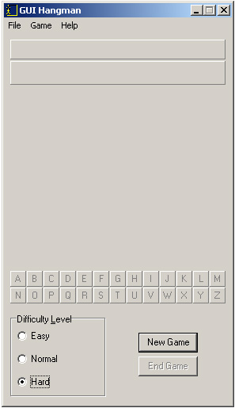

Choosing a Difficulty Level
You can choose a difficulty level using the radio buttons in the bottom left hand corner of the main window. Before you start a new game, click the radio button next to the difficulty level that you want to play at. The harder the difficulty level, the longer the words are in the game. By default, the difficulty level is set to Easy.
